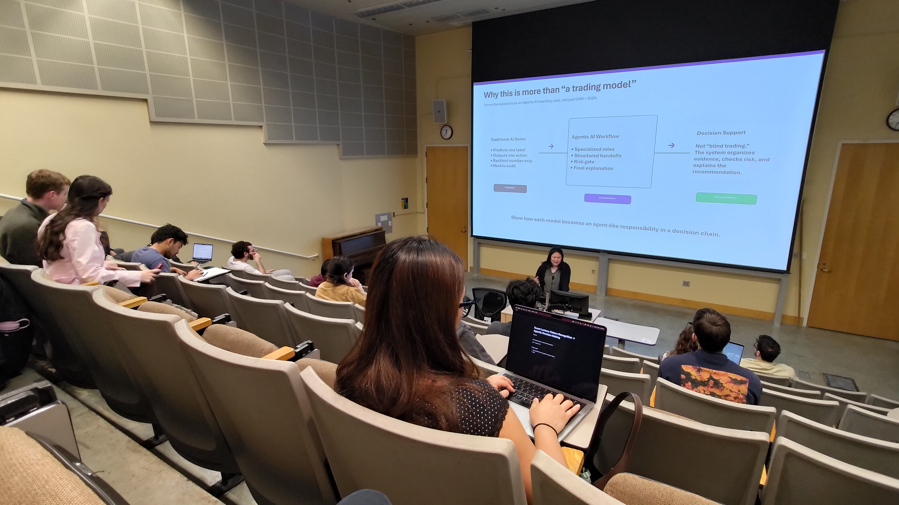
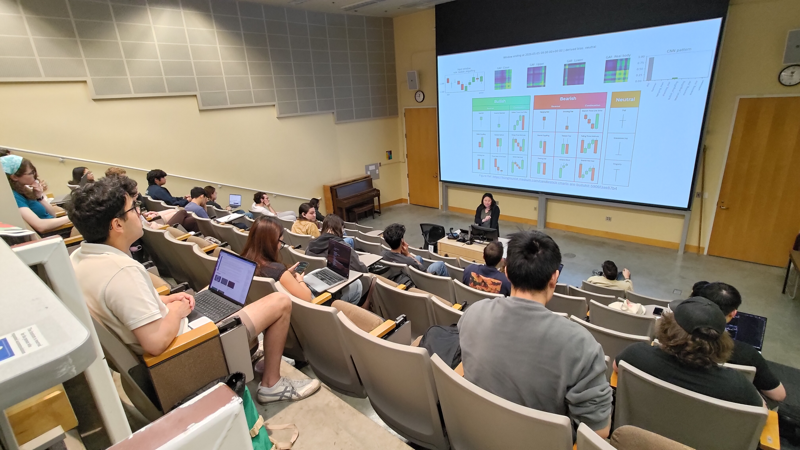
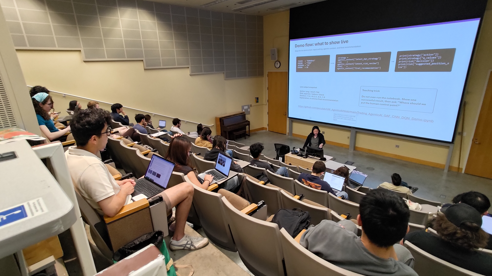
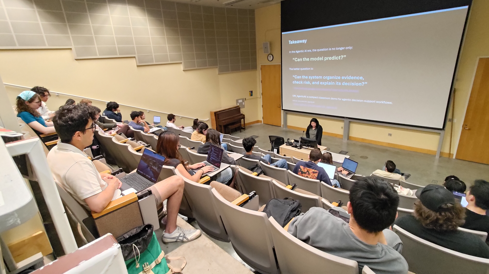

資料表徵
把 OHLC window 轉成 CULP + GAF 圖像，交給 CNN 檢視。
華盛頓大學 · 2026 年 5 月 11 日
15 分鐘短講之後，接上一套完整的程式範例。學生可以追蹤市場資料如何成為視覺模式、agent 行動、風險覆核，以及最後能被人讀懂的建議。





學習路徑
把 OHLC window 轉成 CULP + GAF 圖像，交給 CNN 檢視。
以 CNN pattern probe 將視覺結構轉為模型證據。
DQN／DRL policy 根據目前狀態提出行動。
對提案 approve、reduce 或 block，再解釋最後建議。
可執行範例
Notebook 裡是完整範例程式，不只是結果截圖。Colab 可直接在瀏覽器開啟執行，GitHub 則方便閱讀原始碼。